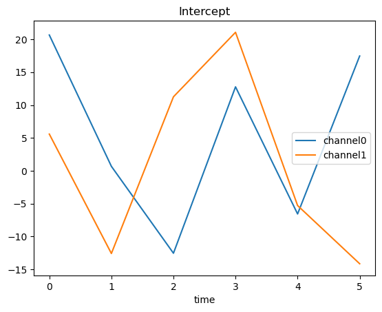
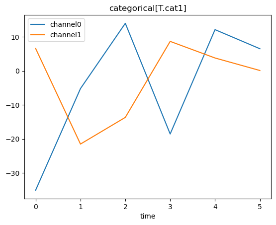
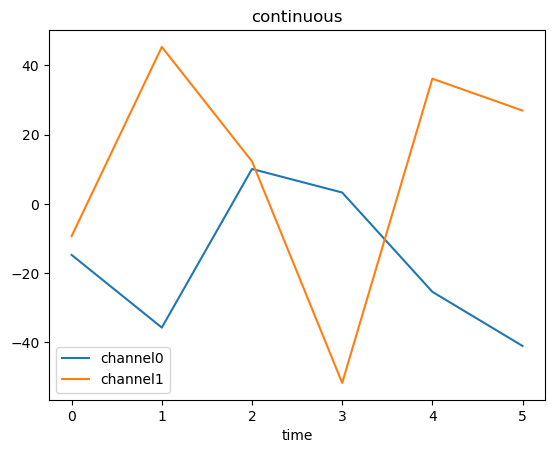

Note
Click here to download the full example code
Ordinary least squares and linear mixed-effects: minimal examples
OLS and mixed-effect models are specified by model formulas. The
results returned by statstmodels for OLS and lme4::lmer for
mixed-effcts models populate the FitGrid object. The FitGrid[times, channels] can be sliced by
times or channels with pandas index slicing. The results are
accessed via the fit object attributes and returned as a
pandas.DataFrame or another FitGrid[times, channels].
Generate simulated data and load Epochs
import fitgrid
epochs_df = fitgrid.generate(
n_samples=6, n_channels=4, return_type="dataframe"
)
epochs_df.set_index(["epoch_id", "time"], inplace=True)
epochs_fg = fitgrid.epochs_from_dataframe(
epochs_df,
epoch_id="epoch_id",
time="time",
channels=["channel0", "channel1"],
)
Ordinary least squares (OLS)
These models are specified with patsy Python formulas like lm in R. The
results come back via statsmodels as FitGrid[times, channels] objects populated with linear_model.RegressionResults.
Query and display OLS parameters
Query and display parameter standard errors
params = lm_grid.params
params.index = params.index.set_names(["time", "params"])
for param, vals in params.groupby("params"):
ax = vals.reset_index("params", drop=True).plot()
ax.set_title(param)
- 
- 
- 
Linear mixed effects (LMER)
These models are specified with lme4::lmer R formulas and the
results come back via pymer4 as FitGrid[times,
channels] objects populated with
Lmer objects from the
lme4::lmer and lmerTest results.
Fit a mixed-effects model with lme4::lmer via pymer4
Out:
boundary (singular) fit: see ?isSingular
boundary (singular) fit: see ?isSingular
boundary (singular) fit: see ?isSingular
boundary (singular) fit: see ?isSingular
boundary (singular) fit: see ?isSingular
boundary (singular) fit: see ?isSingular
boundary (singular) fit: see ?isSingular
boundary (singular) fit: see ?isSingular
boundary (singular) fit: see ?isSingular
boundary (singular) fit: see ?isSingular
Query and display some lme4::lmer fit results
Total running time of the script: ( 0 minutes 6.046 seconds)